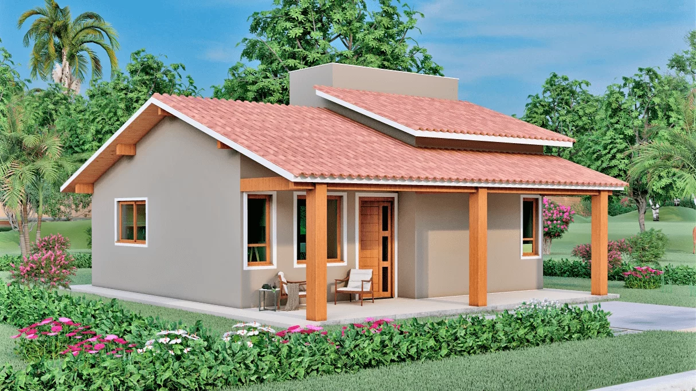

Parque das aguas de Caxambu

Um tanto incertos e obscuros são os relatos dos primeiros tempos de descobrimento; as versões, ao sabor dos narradores, variam. A versão mais aceita é que na antiga fazenda Caxambu, carpinteiros daí se internaram na mata em busca de madeira para uma certa obra que pretendiam realizar; a atenção dos mesmo foi atraída por um grande cedro, junto ao qual não se podia chegar com facilidade, devido ao terreno pantanoso onde se erguia. Os carpinteiros removeram a dificuldade, improvisando passadiços de madeira, fazendo por fim, tombar a valiosa árvore.
Caxambu - Minas Gerais - Rua João Carlos, 100 - Centro
Parque das aguas de São Lourenço

O Parque das Águas é uma das atrações imperdíveis de São Lourenço, com suas nove fontes de águas minerais e centro hidroterápico. Beba água da fonte, faça um passeio romântico de pedalinho pelo lago e desfrute de banhos de espuma, sais, saunas e massagens. O Parque das Águas de São Lourenço foi estabelecido em 1936, e hoje em dia é muito bem administrado pela Minalba
São Lourenço - Sul de Minas Gerais
Parque das Aguas de cambuquira

O Parque das Águas de Cambuquira fica bem próximo da rede hoteleira e abriga 5 (cinco) fontes de águas minerais (curativas), a área é composta por jardins muito bem arborizados, Spa das águas, lago, pedalinho, lanchonete, academia ao ar livre. O Parque das Águas tem em seu entorno uma grande área de Mata Remanescente de Mata Atlântica.
Cambuquira - Sul de Minas Gerais